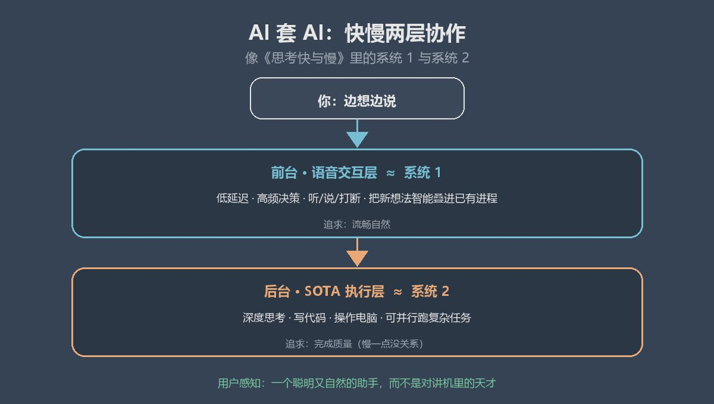

GPT live语音，真正改变的，是交互思维方式
最近，OpenAI 把 Live 语音功能推到了前台。
不是你说完、它再说的那种录音式语音。
而是能边听边说、随时打断的持续对话。
就像朋友面对面聊天一样，自由自在的交流。
我实测了一下，发现这是人机交互效率极大的提升。
· · ·
有人可能有这样的疑问，live语音和原来的录音对话有多大区别呢？
毕竟目前其他几家，Claude、Cursor、Copilot都还是那种你一句，我一句的。
就是像在用对讲机，人和AI的发言中间是泾渭分明的。
好像这也能交流呀，live语音到底有多大提升呢。
我觉得这完全是质变。
· · ·
以前用语音，我们的操作是这样的：先在脑子里把想法组织清楚，或者想个大概，再一口气打开语音说完。
这个过程看着很正常，其实一直在悄悄干扰你的思维。
你必须先把模糊的、半成品的想法，加工成一段相对完整的话，才去说给 AI。
中间一旦卡住，语音识别可能会识别错，或者时长不够。
这种紧迫感，也逼得你不得不快速交代完要求，而不敢在对话中整理和调整思路。
GPT-Live 带来的持续语音对话，表面上好像和轮次对话也没差多少，也就多了个随时打断。
但持续语音对话极高的价值，是它保护了思维的连续性。
人的认知带宽是很有限的，任何让你在思考时还要分心去关注的东西，都会降低思考的质量。
不论是语音时长限制，还是轮次式对话在修改方向时的缓慢，都在悄悄偷走你的认知带宽。
让你不能把脑力，完全聚焦在问题上。
而 Live 语音，把这种带宽占用，降低到一个全新的水平。
你可以边想边说，说到一半发现方向不对，直接打断它。
也可以先抛出一个不完整的想法，让它帮你往下接。
思维不需要每次都“打包好再寄出去”，它可以以更流动、更自然的方式运行。
· · ·
AI领域，大家总在追求一个完美的 prompt。
一句话就能把所有需求交代清楚。
但这个“预加工”的过程，本身就是很反人类的。
等于是你在脑子里，模拟了整个操作流程，定位了可能有问题的地方，修正好了思路，再凝练成 AI 不会误解的需求。
所以为啥大家想要大佬的 skill，因为这个过程太累了。
但它本可以不那么累。
持续对话允许你把半成品直接丢进去。
你可以说“我感觉这里有点不对，但说不上来”，它会追问、帮你补全、重新组织。
语言组织这件事，从用户必须独自完成的前置工作，变成了对话过程中的共同完成。
这会带来一个很实际的变化：你更敢于在想法还不成熟的时候就开始和 AI 对话。
试错成本变低了，探索性的思考才能被释放出来，创意才更容易喷涌而出。
· · ·
还有一层，容易被忽略
以前中途改需求，你得自己当调度员。
该不该打断？上一个任务还要不要？新想法是插队还是排队？
想清楚后，再重新组织一段话发出去。
你既是思考者，也是项目经理。
Live 把这些判断，部分交给了语音模型。
它可以一边在后台跑复杂任务，一边继续跟你聊。
你忽然有了新想法，直接说就行。
不用自己砍掉旧任务、开一单新的。
旧的继续跑，新的也能接住。
你终于可以把注意力，更多留在事情本身，而不是管理任务进程。
· · ·
这其实在演示一种更重要的架构
live语音还代表一种更底层的范式变革。
AI 套 AI的模式。
前台是个低延迟、高频决策的交互层：承接你的思维输出，然后智能叠加到已有进程中。
后台是更强的SOTA模型：深度思考、写代码、操作电脑。
如果你读过《思考快与慢》，你会发现这就像书中作者发现的，人类的两套快慢思考系统。
语音模型，追求流畅自然，像人的系统 1。
SOTA模型慢一点没关系，要的是完成质量，更像系统 2。
用户感受到的是一个又聪明又自然的助手，而不是一个在用对讲机的天才。

不光语音模型需要AI套AI。
在具身智能等其他赛道也是的。
一个本地小模型负责动作执行，一个云端模型负责长程决策，也许还要有另外的语音模型，来做用户交互。
这种不同规模的AI协作，将把智力为人服务的过程，变得更丝滑。
正如科幻作家阿瑟·克拉克名言，任何先进的技术都与魔法无异。
· · ·
它并非万能，边界很清晰
说了这么多好，但它也有能力边界。
需要执行的任务一长，双向对话就很难持续。
一旦进入要跑好几分钟才有结果的阶段，你多半会选择：放着让它跑，我去做别的。
双向对话，自然就结束了。
所以适用阶段很清楚：
构思、规划、澄清需求时打开live语音：很香。
简单说，Live 最适合“还在想清楚”的时候，不是“已经在埋头执行”的时候。
实测发现，GPT的入门Go 和 Plus 用户，都能用完整版 GPT-Live。
甚至免费用户的额度，也够体验一下。
语音额度上，两者差不多。
24 小时内，大约有 1 小时 Live 语音。
Pro 则接近无限。
我测试了一下，国内带宽不算很好的网络，也能较为顺畅地对话。
说明对网络的要求不算很高，当然魔法肯定是不能少的。
· · ·
写在最后
我认为GPT的live语音模式，是一种很重要的交互变革。
它护住你思维的流动，压低表达门槛，把任务调度交给语音模型。
也展示了，未来AI整合系统，将在服务流畅和深度能力上的双赢。
相信这种高效的架构，会很快在业界铺开的。